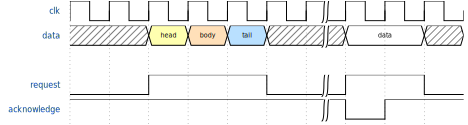

bus
It is common for busses to represent only a transition with the new value.
The list of possible characters is the following: xX=23456789
x or X define any unknown value.=23456789 are the same symbol with different background color
jsonml
yaml
toml

set the content of the file to
{signal: [
{name: "clk", wave: "p.....|..."},
{name: "data", wave: "x.345x|=.x", data: ["head", "body", "tail", "data"]}
{},
{name: 'request', wave: '0.1..0|1.0' },
{name: 'acknowledge', wave: '1.....|01.' }
]}
then generate an image with undulate
undulate -f svg -i step_3_dig.json -o step_3_dig.svg
set the content of the file to
clk:
wave: "p.....|..."
data:
wave: "x.345x|=.x"
data: "head body tail data"
"":
wave: ""
request:
wave: "0.1..0|1.0"
acknowledge:
wave: "1.....|01."
then generate an image with undulate
undulate -f svg -i step_3_dig.yaml -o step_3_dig.svg
set the content of the file to
clk.wave = "p.....|..."
data.wave = "x.345x|=.x"
spacer.wave = ""
request.wave = "0.1..0|1.0"
acknowledge.wave = "1.....|01."
data.data = "head body tail data"
then generate an image with undulate
undulate -f svg -i step_3_dig.toml -o step_3_dig.svg
Note
values of bus is defined in
dataattributedata could be either an array or a string where itemsare delimited by a space character